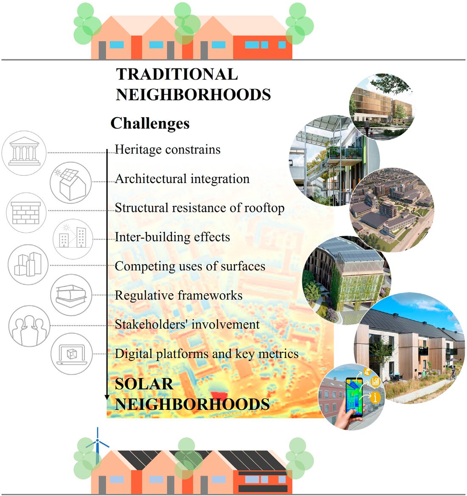
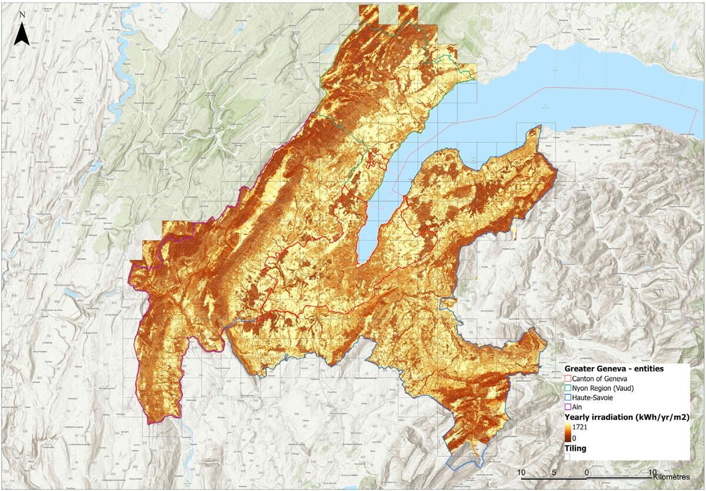

Projects
Collaborative projects, and the role I hold in each.
Ongoing 2025–present
DOLMEN, ANR JCJC
An ANR young-researcher project I lead. Surveying and analysing the photovoltaic capacity already installed at national scale.
- Role
- Principal investigator
- Funding
- ANR, jeune Chercheuse Jeune Chercheur (JCJC)
Planning what remains to be installed means knowing what stands today. DOLMEN extends the rooftop photovoltaic detection pipeline built in the laboratory. Aerial imagery, convolutional neural networks, validation against distribution grid operator records, open release of the results.
The project funds the doctoral work of Mohamed Ennhiri. The datasets and tools are published openly. You will find them on the Tools and data page.
Completed 2020–2024
IEA SHC Task 63, solar Neighborhood Planning
An international collaboration across ten countries. Planning neighbourhoods so solar access survives the next round of construction.
- Role
- Subtask C leader, Subtask D co-leader
- Funding
- IEA Solar Heating and Cooling Programme
- Partners
- Australia, Canada, China, Denmark, France, Italy, Norway, Slovakia, Sweden, Switzerland
- Project website
- task63.iea-shc.org/

Task 63 of the International Energy Agency Solar Heating and Cooling Programme brought together experts from ten countries. The Task supports developers, property owners, architects, urban planners and municipalities in designing solar neighbourhoods. The goal is long-term access to sunlight, for energy production and for daylight in buildings and outdoor spaces.
I led Subtask C with Jouri Kanters. We surveyed the solar planning tools practitioners use in practice. We identified where their workflows break down. We set out what the next generation of tools needs to do. I also co-led Subtask D.
The Task produced public reports, a review of interactive solar cadaster platforms, and a framework for engaging stakeholders and citizens.
Completed 2019–2022
G2 Solar, a solar cadastre for Greater Geneva
A cross-border Interreg project. Building, validating and putting to work a solar cadastre covering 265,000 buildings.
- Role
- Researcher
- Funding
- Interreg France–Suisse
- Partners
- hepia / HES-SO Genève, LOCIE, Université Savoie Mont Blanc / CNRS, Canton de Genève

Greater Geneva forms a single functional territory split by a national border. Coordinated solar planning becomes difficult there, and valuable. G2 Solar developed a solar cadastre covering the building stock of the agglomeration, façades included.
The work spanned the whole chain. A radiative model validated numerically against reference simulations. A large-scale multicriteria assessment of which buildings suit photovoltaic integration. An analysis of how a cadastre feeds solar governance across a transborder agglomeration.
Local authorities and a series of follow-on studies still use the resulting datasets and methods.
Ongoing 2023–present
Photovoltaic solar energy in France, a collective assessment
A collective CNRS report. Answering the recurring questions of the public debate on photovoltaics, with sources.
- Role
- Contributing author
- Funding
- CNRS
- Partners
- CNRS, Fédération FédéSol
Photovoltaics attracts the same public questions year after year. Land use, materials, carbon payback, intermittency, recycling. These questions deserve answers grounded in the literature, not in position-taking.
This collective CNRS document brings together researchers from across the French photovoltaic community. The report sets out the reality, the potential and the real difficulties of photovoltaic solar energy in France. Successive versions have updated the text, and the report stays freely available.